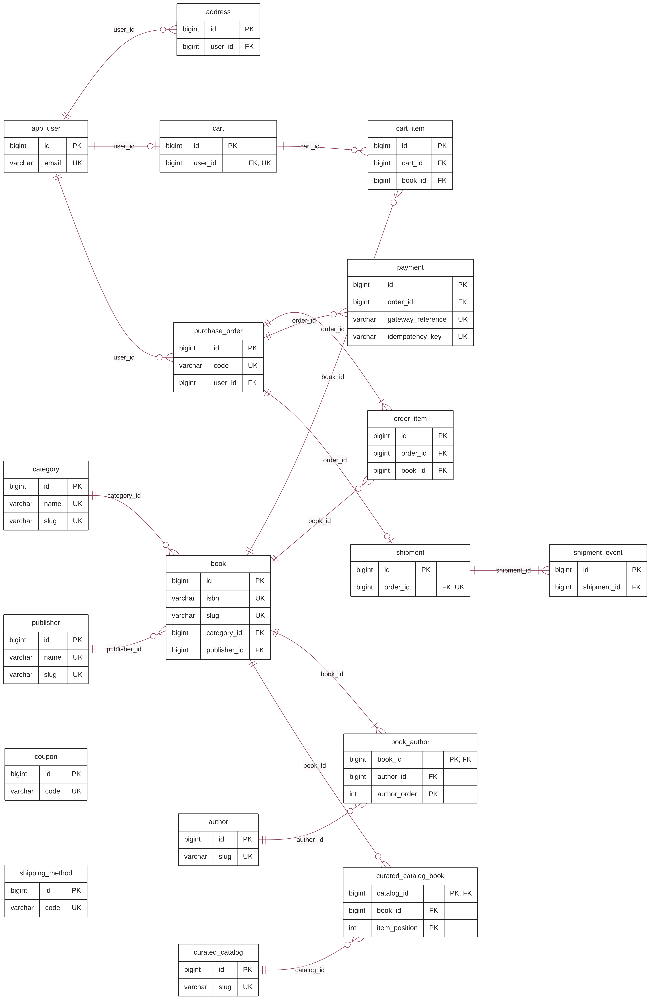

O Prelo guarda tudo o que importa num banco relacional: contas, endereços, catálogo, carrinhos, pedidos, pagamentos e envios. São 18 tabelas, iguais nos quatro bancos suportados. O Redis só acelera e guarda o que é passageiro.
Estoque, preços, pedidos e pagamentos só existem no banco. O Redis guarda cache, sessões e tokens de vida curta: se ele for apagado, ninguém perde um pedido, só precisa entrar de novo. Por isso o backup do Prelo é o backup do banco.
A lista Quero ler e os livros vistos por último, que a interface ganhou nesta versão, ficam no navegador de cada pessoa (armazenamento local) e não criam tabelas nem chaves no Redis.
| Área | Tabelas | O que guarda |
|---|---|---|
| Contas | app_user, address | Pessoas, papéis e endereços de entrega |
| Catálogo | book, author, book_author, publisher, category, curated_catalog, curated_catalog_book | Livros, autores, editoras, estantes e vitrines |
| Carrinho | cart, cart_item | O que cada conta pretende comprar |
| Pedidos | purchase_order, order_item, coupon | O que foi comprado, por quanto e para onde |
| Pagamentos | payment | Cada tentativa de pagamento e o seu resultado |
| Envio | shipping_method, shipment, shipment_event | Tabela de frete, envio de cada pedido e rastreio |
| DB_VENDOR | Versões | Driver JDBC | Migrações |
|---|---|---|---|
postgresql | 14 ou mais (CI no 16) | org.postgresql | db/migration/postgresql |
mysql | 8.0 ou mais (CI no 8.4) | com.mysql (Connector/J) | db/migration/mysql |
sqlserver | 2019 ou mais (CI no 2022) | com.microsoft.sqlserver | db/migration/sqlserver |
oracle | 19c ou mais (CI no 23ai Free) | com.oracle.database.jdbc | db/migration/oracle |
DB_VENDOR ativa o perfil do Spring com o mesmo nome: application-postgresql.yml, application-mysql.yml, application-sqlserver.yml ou application-oracle.yml. Cada um só define a URL JDBC.classpath:db/migration/{vendor}: o Spring troca {vendor} pelo nome do banco conectado e roda só as migrações daquela pasta.COMPOSE_PROFILES sobe só o contêiner do banco escolhido, sempre com o nome de rede db.| Chave | Conteúdo | Vida |
|---|---|---|
livraria:cache:* | Vitrine, categorias, catálogos e detalhe dos livros | 5 a 30 min |
livraria:auth:refresh:* | Hash do token de renovação, com o id da conta | 7 dias |
livraria:auth:fail:* | Senhas erradas por e-mail | 15 min |
livraria:pay:card:* | Token do cartão: bandeira, 4 dígitos, resultado do sandbox | 10 min |
livraria:lock:* | Travas de tarefas (expiração de pedidos, carga inicial) | até 5 min |
Todas as tabelas, com chaves primárias (PK), estrangeiras (FK) e únicas (UK). Cada ligação sai da chave estrangeira, no lado muitos (pé de galinha), e chega na chave primária, no lado um (dois traços).
Só as chaves aparecem. As outras colunas estão no capítulo 3 e no capítulo 5. Um traço simples no lado do filho indica relação 1:1 (cart e shipment). coupon e shipping_method não têm chave estrangeira: o pedido copia o que valia na hora.
O diagrama da página seguinte sai de docs/fonte/diagrama-er.mmd (Mermaid). Depois de mudar o esquema, gere de novo com mmdc -i diagrama-er.mmd -o diagrama-er.png -c diagrama-er.json -s 3 -b white.
| Tabela um | Relação | Tabela muitos | Pela coluna | Ao apagar o pai |
|---|---|---|---|---|
app_user | 1:N | address | address.user_id | bloqueia |
category | 1:N | book | book.category_id | bloqueia |
publisher | 1:N | book | book.publisher_id | bloqueia |
book | 1:N | book_author | book_author.book_id | apaga junto |
author | 1:N | book_author | book_author.author_id | bloqueia |
curated_catalog | 1:N | curated_catalog_book | curated_catalog_book.catalog_id | apaga junto |
book | 1:N | curated_catalog_book | curated_catalog_book.book_id | bloqueia |
app_user | 1:1 | cart | cart.user_id | bloqueia |
cart | 1:N | cart_item | cart_item.cart_id | apaga junto |
book | 1:N | cart_item | cart_item.book_id | bloqueia |
app_user | 1:N | purchase_order | purchase_order.user_id | bloqueia |
purchase_order | 1:N | order_item | order_item.order_id | apaga junto |
book | 1:N | order_item | order_item.book_id | bloqueia |
purchase_order | 1:N | payment | payment.order_id | bloqueia |
purchase_order | 1:1 | shipment | shipment.order_id | bloqueia |
shipment | 1:N | shipment_event | shipment_event.shipment_id | apaga junto |

Contas e carrinho no alto, pedidos, pagamentos e envio no meio, catálogo embaixo. coupon e shipping_method ficam soltos: são referência, sem chave estrangeira.
Os mesmos relacionamentos, agora com todas as colunas e o tipo lógico de cada uma. O tipo com ? aceita nulo; a linha em malva abaixo de uma chave estrangeira diz para qual tabela ela aponta.
Uma conta tem vários endereços e um carrinho. O carrinho tem um item por livro; a quantidade fica no item.
| id | bigint | PK |
| varchar(160) | UK | |
| password_hash | varchar(100) | |
| full_name | varchar(120) | |
| phone | varchar(20) ? | |
| user_role | varchar(20) | |
| active | 0/1 | |
| created_at | timestamp utc | |
| last_login_at | timestamp utc ? |
| id | bigint | PK |
| user_id→ app_user | bigint | FK |
| label | varchar(40) | |
| recipient | varchar(120) | |
| zip_code | varchar(9) | |
| street | varchar(160) | |
| street_number | varchar(20) | |
| complement | varchar(80) ? | |
| district | varchar(80) | |
| city | varchar(80) | |
| state | varchar(2) | |
| is_default | 0/1 | |
| created_at | timestamp utc |
| id | bigint | PK |
| user_id→ app_user | bigint | FK UK |
| updated_at | timestamp utc |
| id | bigint | PK |
| cart_id→ cart | bigint | FK |
| book_id→ book | bigint | FK |
| quantity | int | |
| added_at | timestamp utc |
Cada livro pertence a uma categoria e a uma editora e tem um ou mais autores, em ordem. Os catálogos curados apontam para livros numa ordem própria. As duas tabelas de ligação usam a posição como parte da chave primária.
| id | bigint | PK |
| isbn | varchar(17) | UK |
| title | varchar(200) | |
| subtitle | varchar(200) ? | |
| slug | varchar(220) | UK |
| synopsis | varchar(4000) ? | |
| category_id→ category | bigint | FK |
| publisher_id→ publisher | bigint | FK |
| language_code | varchar(5) | |
| page_count | int ? | |
| published_year | int ? | |
| book_format | varchar(20) | |
| price | decimal(12,2) | |
| list_price | decimal(12,2) | |
| stock_quantity | int | |
| weight_grams | int | |
| cover_style | int | |
| rating_average | decimal(3,2) | |
| rating_count | int | |
| sold_count | int | |
| active | 0/1 | |
| search_text | varchar(1000) | |
| created_at | timestamp utc | |
| updated_at | timestamp utc |
| id | bigint | PK |
| name | varchar(80) | UK |
| slug | varchar(90) | UK |
| description | varchar(400) ? | |
| accent | varchar(7) | |
| sort_order | int | |
| active | 0/1 |
| id | bigint | PK |
| name | varchar(120) | UK |
| slug | varchar(130) | UK |
| book_id→ book | bigint | PK FK |
| author_id→ author | bigint | FK |
| author_order | int | PK |
| id | bigint | PK |
| name | varchar(120) | |
| slug | varchar(130) | UK |
| bio | varchar(1000) ? |
| catalog_id→ curated_catalog | bigint | PK FK |
| book_id→ book | bigint | FK |
| item_position | int | PK |
| id | bigint | PK |
| name | varchar(80) | |
| slug | varchar(90) | UK |
| description | varchar(400) ? | |
| highlight | varchar(160) ? | |
| sort_order | int | |
| active | 0/1 |
O pedido é o centro: tem itens, várias tentativas de pagamento e, depois de pago, um envio com a sua linha do tempo. Formas de envio e cupons são tabelas de referência: o pedido guarda uma cópia do que valia na hora, sem chave estrangeira para elas.
| id | bigint | PK |
| code | varchar(20) | UK |
| user_id→ app_user | bigint | FK |
| order_status | varchar(20) | |
| subtotal | decimal(12,2) | |
| discount | decimal(12,2) | |
| shipping_fee | decimal(12,2) | |
| total | decimal(12,2) | |
| coupon_code | varchar(30) ? | |
| item_count | int | |
| ship_recipient | varchar(120) | |
| ship_zip_code | varchar(9) | |
| ship_street | varchar(160) | |
| ship_number | varchar(20) | |
| ship_complement | varchar(80) ? | |
| ship_district | varchar(80) | |
| ship_city | varchar(80) | |
| ship_state | varchar(2) | |
| shipping_method_code | varchar(20) | |
| shipping_method_name | varchar(60) | |
| shipping_carrier | varchar(60) | |
| shipping_min_days | int | |
| shipping_max_days | int | |
| placed_at | timestamp utc | |
| payment_due_at | timestamp utc | |
| paid_at | timestamp utc ? | |
| canceled_at | timestamp utc ? | |
| cancel_reason | varchar(200) ? | |
| version | bigint |
| id | bigint | PK |
| order_id→ purchase_order | bigint | FK |
| book_id→ book | bigint | FK |
| book_slug | varchar(220) | |
| book_title | varchar(200) | |
| book_authors | varchar(300) ? | |
| book_isbn | varchar(17) | |
| cover_style | int | |
| unit_price | decimal(12,2) | |
| quantity | int | |
| line_total | decimal(12,2) |
| id | bigint | PK |
| order_id→ purchase_order | bigint | FK |
| payment_method | varchar(20) | |
| payment_status | varchar(20) | |
| amount | decimal(12,2) | |
| installments | int | |
| card_brand | varchar(20) ? | |
| card_last4 | varchar(4) ? | |
| pix_payload | varchar(400) ? | |
| boleto_line | varchar(60) ? | |
| gateway_reference | varchar(40) | UK |
| idempotency_key | varchar(80) | UK |
| failure_reason | varchar(200) ? | |
| expires_at | timestamp utc ? | |
| created_at | timestamp utc | |
| confirmed_at | timestamp utc ? |
| id | bigint | PK |
| order_id→ purchase_order | bigint | FK UK |
| carrier | varchar(60) | |
| service_name | varchar(60) | |
| tracking_code | varchar(30) ? | |
| shipment_status | varchar(20) | |
| estimated_delivery | date ? | |
| shipped_at | timestamp utc ? | |
| delivered_at | timestamp utc ? | |
| created_at | timestamp utc | |
| updated_at | timestamp utc |
| id | bigint | PK |
| shipment_id→ shipment | bigint | FK |
| shipment_status | varchar(20) | |
| title | varchar(120) | |
| detail | varchar(300) ? | |
| location | varchar(120) ? | |
| occurred_at | timestamp utc |
| id | bigint | PK |
| code | varchar(20) | UK |
| name | varchar(60) | |
| carrier | varchar(60) | |
| description | varchar(200) ? | |
| base_fee | decimal(12,2) | |
| fee_per_kg | decimal(12,2) | |
| free_above | decimal(12,2) ? | |
| min_days | int | |
| max_days | int | |
| sort_order | int | |
| active | 0/1 |
| id | bigint | PK |
| code | varchar(30) | UK |
| description | varchar(160) | |
| discount_type | varchar(10) | |
| discount_value | decimal(12,2) | |
| min_subtotal | decimal(12,2) | |
| valid_until | timestamp utc ? | |
| active | 0/1 |
O que toda tabela, coluna e migração do Prelo precisa seguir para continuar funcionando igual nos quatro bancos. Vale para quem for evoluir o esquema.
snake_case, no singular (book, order_item). O Hibernate converte os campos Java (stockQuantity) para esse formato.app_user (e não user), purchase_order (e não order), user_role, book_format, item_position, curated_catalog.pk_<tabela>, fk_<tabela>_<coluna>, uk_<tabela>_<colunas>, ix_<tabela>_<colunas>. Nomes gerados pelo banco mudam de um para outro e atrapalham migrações futuras.Cada coluna usa um tipo lógico, que vira o tipo nativo de cada banco. Use só estes:
| Lógico | Java | PostgreSQL | MySQL | SQL Server | Oracle |
|---|---|---|---|---|---|
| BIGINT IDENTITY | Long | BIGINT GENERATED BY DEFAULT AS IDENTITY | BIGINT AUTO_INCREMENT | BIGINT IDENTITY(1,1) | NUMBER(19) GENERATED BY DEFAULT ON NULL AS IDENTITY |
| BIGINT | Long | BIGINT | BIGINT | BIGINT | NUMBER(19) |
| INT | Integer | INTEGER | INT | INT | NUMBER(10) |
| 0/1 | Boolean (Flag) | SMALLINT | SMALLINT | SMALLINT | NUMBER(1) |
| DECIMAL(12,2) | BigDecimal | NUMERIC(12,2) | DECIMAL(12,2) | DECIMAL(12,2) | NUMBER(12,2) |
| DECIMAL(3,2) | BigDecimal | NUMERIC(3,2) | DECIMAL(3,2) | DECIMAL(3,2) | NUMBER(3,2) |
| TIMESTAMP UTC | Instant | TIMESTAMP(6) WITH TIME ZONE | DATETIME(6) | DATETIMEOFFSET(6) | TIMESTAMP(6) WITH TIME ZONE |
| DATE | LocalDate | DATE | DATE | DATE | DATE |
| VARCHAR(n) | String | VARCHAR(n) | VARCHAR(n) utf8mb4 | NVARCHAR(n) | VARCHAR2(n CHAR) |
id numérico gerado pelo banco (GenerationType.IDENTITY). Não use sequências nem UUID gerado no banco: a identidade é o único mecanismo igual nos quatro.book_id, author_order), que o JPA mantém com @OrderColumn.id.Não existe tipo booleano comum aos quatro (o Oracle só tem a partir do 23ai). Todo booleano é numérico, com 0 ou 1, e passa pelo conversor Flag (@Convert(converter = Flag.class)). Nunca crie coluna BOOLEAN, BIT ou TINYINT(1) direto.
java.time.Instant gravados em UTC (hibernate.jdbc.time_zone=UTC). A interface converte para o horário de Brasília na hora de mostrar.LocalDate em DATE.DEFAULT CURRENT_TIMESTAMP nem gatilhos. A aplicação preenche as datas, para o valor ser o mesmo em todos os bancos e nos testes.Valores em reais são DECIMAL(12,2) (NUMBER(12,2) no Oracle) e BigDecimal no Java, com arredondamento HALF_EVEN em duas casas. Nunca use FLOAT, DOUBLE ou MONEY.
TEXT, CLOB ou @Lob: cada banco trata objetos grandes de um jeito, e o PostgreSQL ainda separa @Lob em outra área.utf8mb4 no MySQL, NVARCHAR no SQL Server (com use_nationalized_character_data), VARCHAR2(n CHAR) no Oracle (tamanho em caracteres, não em bytes).book.search_text é preenchida pela aplicação já sem acentos e em minúsculas, e a busca usa LIKE sobre ela.ON DELETE CASCADE só onde o filho não existe sem o pai (itens do carrinho, autores do livro, livros do catálogo, itens do pedido, eventos do envio). O resto bloqueia a exclusão, e livros saem da loja com active = 0.NOT NULL: o SQL Server aceita um único nulo numa coluna única, os outros aceitam vários.O pedido não depende de dados que mudam. Endereço, forma de envio, prazos, título, ISBN, autores e preço são copiados para purchase_order e order_item no fechamento. Mudar o endereço ou o preço de um livro não altera pedidos antigos.
UPDATE book SET stock_quantity = stock_quantity - :qtd WHERE id = :id AND stock_quantity >= :qtd. Se nenhuma linha mudar, falta estoque. Os livros são reservados em ordem de id para evitar deadlock.purchase_order.version (JPA @Version) impede que um pagamento e a expiração alterem o mesmo pedido ao mesmo tempo.payment.idempotency_key é única: a mesma tentativa repetida devolve o pagamento já criado.pk_, fk_, uk_ e ix_; índice em toda FK. Nada de BOOLEAN, LOB, FLOAT ou DEFAULT de data. Entidade atualizada e mvn verify passando nos quatro bancos.V2__descricao.sql em postgresql, mysql, sqlserver e oracle.SchemaValidationTest compara entidade e tabela no PostgreSQL e no MySQL, e o CI roda tudo nos quatro bancos.Cada tabela com os campos, o tipo lógico (o capítulo 4 mostra o tipo em cada banco), se aceita nulo, a chave e o que guarda.
Contas de clientes e da equipe da livraria.
| Campo | Tipo | Nulo | Chave | Descrição |
|---|---|---|---|---|
id | bigint | não | PK | Identificador gerado pelo banco (identidade) |
email | varchar(160) | não | UK | E-mail de login, sempre em minúsculas |
password_hash | varchar(100) | não | Senha com BCrypt | |
full_name | varchar(120) | não | Nome completo | |
phone | varchar(20) | sim | Telefone (opcional) | |
user_role | varchar(20) | não | CUSTOMER ou ADMIN | |
active | 0/1 | não | 1 = ativo, 0 = desativado (exclusão lógica) | |
created_at | timestamp utc | não | Quando foi criado (UTC) | |
last_login_at | timestamp utc | sim | Último login (UTC) |
Endereços de entrega de cada conta (até 10 por conta).
| Campo | Tipo | Nulo | Chave | Descrição |
|---|---|---|---|---|
id | bigint | não | PK | Identificador gerado pelo banco (identidade) |
user_id | bigint | não | FK | Conta dona do registro |
label | varchar(40) | não | Nome do endereço (Casa, Trabalho...) | |
recipient | varchar(120) | não | Quem recebe | |
zip_code | varchar(9) | não | CEP no formato 00000-000 | |
street | varchar(160) | não | Rua | |
street_number | varchar(20) | não | Número | |
complement | varchar(80) | sim | Complemento | |
district | varchar(80) | não | Bairro | |
city | varchar(80) | não | Cidade | |
state | varchar(2) | não | UF | |
is_default | 0/1 | não | 1 = endereço principal da conta | |
created_at | timestamp utc | não | Quando foi criado (UTC) |
Índice (user_id). user_id referencia app_user(id).
Categorias do catálogo (estantes).
| Campo | Tipo | Nulo | Chave | Descrição |
|---|---|---|---|---|
id | bigint | não | PK | Identificador gerado pelo banco (identidade) |
name | varchar(80) | não | UK | Nome exibido |
slug | varchar(90) | não | UK | Identificador legível usado nas URLs |
description | varchar(400) | sim | Texto de apoio | |
accent | varchar(7) | não | Cor da categoria na interface (#RRGGBB) | |
sort_order | int | não | Ordem de exibição | |
active | 0/1 | não | 1 = ativo, 0 = desativado (exclusão lógica) |
Autores. Um livro pode ter vários, em ordem.
| Campo | Tipo | Nulo | Chave | Descrição |
|---|---|---|---|---|
id | bigint | não | PK | Identificador gerado pelo banco (identidade) |
name | varchar(120) | não | Nome exibido | |
slug | varchar(130) | não | UK | Identificador legível usado nas URLs |
bio | varchar(1000) | sim | Biografia curta |
Editoras.
| Campo | Tipo | Nulo | Chave | Descrição |
|---|---|---|---|---|
id | bigint | não | PK | Identificador gerado pelo banco (identidade) |
name | varchar(120) | não | UK | Nome exibido |
slug | varchar(130) | não | UK | Identificador legível usado nas URLs |
Livros à venda, com preço, estoque e a coluna de busca sem acentos.
| Campo | Tipo | Nulo | Chave | Descrição |
|---|---|---|---|---|
id | bigint | não | PK | Identificador gerado pelo banco (identidade) |
isbn | varchar(17) | não | UK | ISBN-13 com hífens |
title | varchar(200) | não | Título | |
subtitle | varchar(200) | sim | Subtítulo | |
slug | varchar(220) | não | UK | Identificador legível usado nas URLs |
synopsis | varchar(4000) | sim | Sinopse (até 4000 caracteres) | |
category_id | bigint | não | FK | Categoria do livro |
publisher_id | bigint | não | FK | Editora do livro |
language_code | varchar(5) | não | Idioma (pt-BR, en...) | |
page_count | int | sim | Número de páginas | |
published_year | int | sim | Ano de publicação | |
book_format | varchar(20) | não | PAPERBACK, HARDCOVER ou POCKET | |
price | decimal(12,2) | não | Preço de venda | |
list_price | decimal(12,2) | não | Preço de capa (maior ou igual ao de venda) | |
stock_quantity | int | não | Estoque disponível; nunca fica negativo | |
weight_grams | int | não | Peso usado no frete | |
cover_style | int | não | Estilo da capa gerada (0 a 11) | |
rating_average | decimal(3,2) | não | Nota média (0 a 5) | |
rating_count | int | não | Quantidade de avaliações | |
sold_count | int | não | Unidades vendidas (ordena os mais vendidos) | |
active | 0/1 | não | 1 = ativo, 0 = desativado (exclusão lógica) | |
search_text | varchar(1000) | não | Título, subtítulo, autores, editora e ISBN sem acentos e em minúsculas (alvo da busca) | |
created_at | timestamp utc | não | Quando foi criado (UTC) | |
updated_at | timestamp utc | não | Última alteração (UTC) |
Índices (category_id), (publisher_id), (active, sold_count), (created_at) e (price). category_id referencia category(id); publisher_id referencia publisher(id).
Liga livros e autores, guardando a ordem de cada autor no livro.
| Campo | Tipo | Nulo | Chave | Descrição |
|---|---|---|---|---|
book_id | bigint | não | PK, FK | Livro |
author_id | bigint | não | FK | Autor |
author_order | int | não | PK | Posição do autor no livro (0, 1, 2...) |
Chave primária composta (book_id, author_order). Índice (author_id). book_id referencia book(id) com exclusão em cascata; author_id referencia author(id).
Catálogos curados: vitrines com nome, chamada e ordem na vitrine.
| Campo | Tipo | Nulo | Chave | Descrição |
|---|---|---|---|---|
id | bigint | não | PK | Identificador gerado pelo banco (identidade) |
name | varchar(80) | não | Nome exibido | |
slug | varchar(90) | não | UK | Identificador legível usado nas URLs |
description | varchar(400) | sim | Texto de apoio | |
highlight | varchar(160) | sim | Chamada curta da vitrine | |
sort_order | int | não | Ordem de exibição | |
active | 0/1 | não | 1 = ativo, 0 = desativado (exclusão lógica) |
Livros de cada catálogo, na ordem escolhida pela livraria.
| Campo | Tipo | Nulo | Chave | Descrição |
|---|---|---|---|---|
catalog_id | bigint | não | PK, FK | Catálogo |
book_id | bigint | não | FK | Livro |
item_position | int | não | PK | Posição do livro no catálogo |
Chave primária composta (catalog_id, item_position). Índice (book_id). catalog_id referencia curated_catalog(id) com exclusão em cascata; book_id referencia book(id).
Um carrinho por conta.
| Campo | Tipo | Nulo | Chave | Descrição |
|---|---|---|---|---|
id | bigint | não | PK | Identificador gerado pelo banco (identidade) |
user_id | bigint | não | FK, UK | Conta dona do registro |
updated_at | timestamp utc | não | Última mudança no carrinho |
user_id referencia app_user(id).
Itens do carrinho (um por livro).
| Campo | Tipo | Nulo | Chave | Descrição |
|---|---|---|---|---|
id | bigint | não | PK | Identificador gerado pelo banco (identidade) |
cart_id | bigint | não | FK | Carrinho |
book_id | bigint | não | FK | Livro |
quantity | int | não | Quantidade (1 a 10) | |
added_at | timestamp utc | não | Quando entrou no carrinho |
Única (cart_id, book_id). Índice (book_id). cart_id referencia cart(id) com exclusão em cascata; book_id referencia book(id).
Formas de envio e a tabela de frete (taxa base, valor por quilo, frete grátis e prazos).
| Campo | Tipo | Nulo | Chave | Descrição |
|---|---|---|---|---|
id | bigint | não | PK | Identificador gerado pelo banco (identidade) |
code | varchar(20) | não | UK | ECONOMICA, EXPRESSA ou RETIRADA |
name | varchar(60) | não | Nome exibido | |
carrier | varchar(60) | não | Transportadora | |
description | varchar(200) | sim | Texto mostrado no checkout | |
base_fee | decimal(12,2) | não | Taxa fixa do frete | |
fee_per_kg | decimal(12,2) | não | Valor por quilo (arredondado para cima) | |
free_above | decimal(12,2) | sim | Subtotal a partir do qual o frete é grátis | |
min_days | int | não | Prazo mínimo em dias úteis | |
max_days | int | não | Prazo máximo em dias úteis | |
sort_order | int | não | Ordem de exibição | |
active | 0/1 | não | 1 = ativo, 0 = desativado (exclusão lógica) |
Cupons de desconto (percentual ou valor fixo).
| Campo | Tipo | Nulo | Chave | Descrição |
|---|---|---|---|---|
id | bigint | não | PK | Identificador gerado pelo banco (identidade) |
code | varchar(30) | não | UK | Código digitado pela pessoa (BEMVINDO10...) |
description | varchar(160) | não | Mensagem mostrada quando o cupom vale | |
discount_type | varchar(10) | não | PERCENT ou FIXED | |
discount_value | decimal(12,2) | não | Percentual ou valor do desconto | |
min_subtotal | decimal(12,2) | não | Subtotal mínimo para valer | |
valid_until | timestamp utc | sim | Validade (opcional) | |
active | 0/1 | não | 1 = ativo, 0 = desativado (exclusão lógica) |
Pedidos, com cópia do endereço, do frete e dos totais no momento da compra.
| Campo | Tipo | Nulo | Chave | Descrição |
|---|---|---|---|---|
id | bigint | não | PK | Identificador gerado pelo banco (identidade) |
code | varchar(20) | não | UK | Código do pedido (PED-AAMMDD-XXXXX) |
user_id | bigint | não | FK | Conta dona do registro |
order_status | varchar(20) | não | PENDING_PAYMENT, PAID, SHIPPED, DELIVERED ou CANCELED | |
subtotal | decimal(12,2) | não | Soma dos itens | |
discount | decimal(12,2) | não | Desconto do cupom | |
shipping_fee | decimal(12,2) | não | Frete cobrado | |
total | decimal(12,2) | não | Subtotal menos desconto mais frete | |
coupon_code | varchar(30) | sim | Cupom aplicado | |
item_count | int | não | Unidades no pedido | |
ship_recipient | varchar(120) | não | Cópia: quem recebe | |
ship_zip_code | varchar(9) | não | Cópia: CEP | |
ship_street | varchar(160) | não | Cópia: rua | |
ship_number | varchar(20) | não | Cópia: número | |
ship_complement | varchar(80) | sim | Cópia: complemento | |
ship_district | varchar(80) | não | Cópia: bairro | |
ship_city | varchar(80) | não | Cópia: cidade | |
ship_state | varchar(2) | não | Cópia: UF | |
shipping_method_code | varchar(20) | não | Cópia: código da forma de envio | |
shipping_method_name | varchar(60) | não | Cópia: nome da forma de envio | |
shipping_carrier | varchar(60) | não | Cópia: transportadora | |
shipping_min_days | int | não | Cópia: prazo mínimo | |
shipping_max_days | int | não | Cópia: prazo máximo | |
placed_at | timestamp utc | não | Quando o pedido foi feito | |
payment_due_at | timestamp utc | não | Prazo para pagar; depois disso o pedido é cancelado | |
paid_at | timestamp utc | sim | Quando o pagamento foi aprovado | |
canceled_at | timestamp utc | sim | Quando foi cancelado | |
cancel_reason | varchar(200) | sim | Motivo do cancelamento | |
version | bigint | não | Versão para bloqueio otimista (JPA @Version) |
Índices (user_id, placed_at), (order_status, payment_due_at), (placed_at) e (paid_at). user_id referencia app_user(id).
Itens do pedido, com cópia do título, do ISBN e do preço pago.
| Campo | Tipo | Nulo | Chave | Descrição |
|---|---|---|---|---|
id | bigint | não | PK | Identificador gerado pelo banco (identidade) |
order_id | bigint | não | FK | Pedido |
book_id | bigint | não | FK | Livro |
book_slug | varchar(220) | não | Cópia: slug do livro | |
book_title | varchar(200) | não | Cópia: título | |
book_authors | varchar(300) | sim | Cópia: autores | |
book_isbn | varchar(17) | não | Cópia: ISBN | |
cover_style | int | não | Estilo da capa gerada (0 a 11) | |
unit_price | decimal(12,2) | não | Preço pago por unidade | |
quantity | int | não | Quantidade (1 a 10) | |
line_total | decimal(12,2) | não | Preço vezes quantidade |
Índices (order_id) e (book_id). order_id referencia purchase_order(id) com exclusão em cascata; book_id referencia book(id).
Tentativas de pagamento de cada pedido. Não guarda número de cartão nem CVV.
| Campo | Tipo | Nulo | Chave | Descrição |
|---|---|---|---|---|
id | bigint | não | PK | Identificador gerado pelo banco (identidade) |
order_id | bigint | não | FK | Pedido |
payment_method | varchar(20) | não | CREDIT_CARD, PIX ou BOLETO | |
payment_status | varchar(20) | não | PENDING, APPROVED, DECLINED, EXPIRED, REFUNDED ou CANCELED | |
amount | decimal(12,2) | não | Valor cobrado | |
installments | int | não | Parcelas (1 para Pix e boleto) | |
card_brand | varchar(20) | sim | Bandeira do cartão | |
card_last4 | varchar(4) | sim | Quatro últimos dígitos | |
pix_payload | varchar(400) | sim | Código Pix copia e cola | |
boleto_line | varchar(60) | sim | Linha digitável do boleto | |
gateway_reference | varchar(40) | não | UK | Referência única no provedor |
idempotency_key | varchar(80) | não | UK | Chave de idempotência (conta + chave enviada) |
failure_reason | varchar(200) | sim | Motivo da recusa | |
expires_at | timestamp utc | sim | Validade do Pix ou do boleto | |
created_at | timestamp utc | não | Quando foi criado (UTC) | |
confirmed_at | timestamp utc | sim | Quando o provedor confirmou |
Índice (order_id, payment_status). order_id referencia purchase_order(id).
O envio de um pedido pago (um por pedido).
| Campo | Tipo | Nulo | Chave | Descrição |
|---|---|---|---|---|
id | bigint | não | PK | Identificador gerado pelo banco (identidade) |
order_id | bigint | não | FK, UK | Pedido |
carrier | varchar(60) | não | Cópia: transportadora | |
service_name | varchar(60) | não | Forma de envio | |
tracking_code | varchar(30) | sim | Código de rastreio | |
shipment_status | varchar(20) | não | PREPARING, IN_TRANSIT, OUT_FOR_DELIVERY, DELIVERED ou RETURNED | |
estimated_delivery | date | sim | Previsão de entrega (data) | |
shipped_at | timestamp utc | sim | Quando foi postado | |
delivered_at | timestamp utc | sim | Quando foi entregue | |
created_at | timestamp utc | não | Quando foi criado (UTC) | |
updated_at | timestamp utc | não | Última alteração (UTC) |
Índices (shipment_status) e (tracking_code). order_id referencia purchase_order(id).
Linha do tempo do rastreio: cada etapa vira um evento.
| Campo | Tipo | Nulo | Chave | Descrição |
|---|---|---|---|---|
id | bigint | não | PK | Identificador gerado pelo banco (identidade) |
shipment_id | bigint | não | FK | Envio |
shipment_status | varchar(20) | não | PREPARING, IN_TRANSIT, OUT_FOR_DELIVERY, DELIVERED ou RETURNED | |
title | varchar(120) | não | Título do evento (Pedido enviado, Saiu para entrega...) | |
detail | varchar(300) | sim | Descrição do evento | |
location | varchar(120) | sim | Local do evento | |
occurred_at | timestamp utc | não | Quando aconteceu |
Índice (shipment_id, occurred_at). shipment_id referencia shipment(id) com exclusão em cascata.
Para comparar, a mesma tabela app_user como ela é criada em cada banco. As outras seguem o mesmo padrão.
CREATE TABLE app_user (
id BIGINT GENERATED BY DEFAULT AS IDENTITY NOT NULL,
email VARCHAR(160) NOT NULL,
password_hash VARCHAR(100) NOT NULL,
full_name VARCHAR(120) NOT NULL,
phone VARCHAR(20),
user_role VARCHAR(20) NOT NULL,
active SMALLINT NOT NULL,
created_at TIMESTAMP(6) WITH TIME ZONE NOT NULL,
last_login_at TIMESTAMP(6) WITH TIME ZONE,
CONSTRAINT pk_app_user PRIMARY KEY (id),
CONSTRAINT uk_app_user_email UNIQUE (email)
);CREATE TABLE app_user (
id BIGINT AUTO_INCREMENT NOT NULL,
email VARCHAR(160) NOT NULL,
password_hash VARCHAR(100) NOT NULL,
full_name VARCHAR(120) NOT NULL,
phone VARCHAR(20),
user_role VARCHAR(20) NOT NULL,
active SMALLINT NOT NULL,
created_at DATETIME(6) NOT NULL,
last_login_at DATETIME(6),
CONSTRAINT pk_app_user PRIMARY KEY (id),
CONSTRAINT uk_app_user_email UNIQUE (email)
) ENGINE=InnoDB DEFAULT CHARSET=utf8mb4 COLLATE=utf8mb4_0900_ai_ci;CREATE TABLE app_user (
id BIGINT IDENTITY(1,1) NOT NULL,
email NVARCHAR(160) NOT NULL,
password_hash NVARCHAR(100) NOT NULL,
full_name NVARCHAR(120) NOT NULL,
phone NVARCHAR(20),
user_role NVARCHAR(20) NOT NULL,
active SMALLINT NOT NULL,
created_at DATETIMEOFFSET(6) NOT NULL,
last_login_at DATETIMEOFFSET(6),
CONSTRAINT pk_app_user PRIMARY KEY (id),
CONSTRAINT uk_app_user_email UNIQUE (email)
);CREATE TABLE app_user (
id NUMBER(19) GENERATED BY DEFAULT ON NULL AS IDENTITY,
email VARCHAR2(160 CHAR) NOT NULL,
password_hash VARCHAR2(100 CHAR) NOT NULL,
full_name VARCHAR2(120 CHAR) NOT NULL,
phone VARCHAR2(20 CHAR),
user_role VARCHAR2(20 CHAR) NOT NULL,
active NUMBER(1) NOT NULL,
created_at TIMESTAMP(6) WITH TIME ZONE NOT NULL,
last_login_at TIMESTAMP(6) WITH TIME ZONE,
CONSTRAINT pk_app_user PRIMARY KEY (id),
CONSTRAINT uk_app_user_email UNIQUE (email)
);Os status são texto (VARCHAR) com os nomes dos enums Java. Só as transições abaixo acontecem; qualquer outra é recusada pela API. Nos esquemas, o ponto é o registro novo, o bloco escuro é o fim normal e o tracejado é um fim sem sucesso.
| De | Para | Quando |
|---|---|---|
| (novo) | PENDING_PAYMENT | Checkout: estoque reservado, prazo de 60 min |
PENDING_PAYMENT | PAID | Cartão aprovado ou Pix e boleto confirmados; cria o envio |
PENDING_PAYMENT | CANCELED | Cancelado pela pessoa, pela livraria ou pelo fim do prazo; o estoque volta |
PAID | SHIPPED | A livraria posta o pedido (envio em trânsito) |
PAID | CANCELED | Cancelado antes de postar; pagamento estornado |
SHIPPED | DELIVERED | Entrega confirmada |
| De | Para | Quando |
|---|---|---|
| (novo) | APPROVED ou DECLINED | Cartão: a resposta do provedor é imediata |
| (novo) | PENDING | Pix ou boleto gerado |
PENDING | APPROVED | O banco confirma (no sandbox, o botão Simular) |
PENDING | EXPIRED | Passou a validade ou o prazo do pedido |
PENDING | CANCELED | Outro pagamento do pedido foi aprovado ou o pedido foi cancelado |
APPROVED | REFUNDED | Pedido pago cancelado antes do envio |
| De | Para | Evento na linha do tempo |
|---|---|---|
| (novo) | PREPARING | Pagamento confirmado; Pedido em separação |
PREPARING | IN_TRANSIT | Pedido enviado (com código de rastreio) |
IN_TRANSIT | OUT_FOR_DELIVERY | Saiu para entrega |
OUT_FOR_DELIVERY | DELIVERED | Pedido entregue |
PREPARING | RETURNED | Pedido cancelado |
O que cada etapa grava, para quem precisa auditar ou investigar um pedido.
| Etapa | Tabelas | O que acontece | |
|---|---|---|---|
| 1 | Carrinho | cart, cart_item | Cria o carrinho na primeira vez; um item por livro |
| 2 | Checkout | book, purchase_order, order_item, cart_item | Baixa o estoque e soma vendidos, cria o pedido com as cópias, esvazia o carrinho |
| 3 | Token do cartão | Redis | Nada vai para o banco |
| 4 | Pagamento | payment | Uma linha por tentativa, com chave de idempotência |
| 5 | Aprovação | payment, purchase_order, shipment, shipment_event | Pedido pago, outros pendentes cancelados, envio e dois eventos criados |
| 6 | Postagem e entrega | shipment, shipment_event, purchase_order | Rastreio, eventos e status do pedido |
| Cancelamento | purchase_order, payment, book, shipment_event | Status, estorno, devolução do estoque e evento |
O cancelamento pode acontecer em qualquer ponto antes da postagem.
SQL que roda igual nos quatro bancos, exceto onde indicado.
SELECT order_status, COUNT(*) AS pedidos, SUM(total) AS valor
FROM purchase_order
GROUP BY order_status
ORDER BY pedidos DESC;SELECT b.title, SUM(i.quantity) AS unidades, SUM(i.line_total) AS receita
FROM order_item i
JOIN purchase_order o ON o.id = i.order_id
JOIN book b ON b.id = i.book_id
WHERE o.order_status <> 'CANCELED'
GROUP BY b.title
ORDER BY unidades DESC;Para limitar a 10 linhas: LIMIT 10 no PostgreSQL e no MySQL; FETCH FIRST 10 ROWS ONLY no Oracle e no PostgreSQL; SELECT TOP 10 ou OFFSET 0 ROWS FETCH NEXT 10 ROWS ONLY no SQL Server.
SELECT p.payment_method, COUNT(*) AS pagamentos, SUM(p.amount) AS valor
FROM payment p
WHERE p.payment_status = 'APPROVED'
GROUP BY p.payment_method;SELECT title, stock_quantity, sold_count
FROM book
WHERE active = 1 AND stock_quantity <= 5
ORDER BY stock_quantity, title;É o mesmo critério do filtro Estoque baixo (até 5) da tela Livros e estoque na administração.
SELECT code, total, payment_due_at
FROM purchase_order
WHERE order_status = 'PENDING_PAYMENT'
ORDER BY payment_due_at;SELECT e.occurred_at, e.shipment_status, e.title, e.location
FROM shipment_event e
JOIN shipment s ON s.id = e.shipment_id
JOIN purchase_order o ON o.id = s.order_id
WHERE o.code = 'PED-DEMO2-TRANS'
ORDER BY e.occurred_at;Com Docker não há nada a fazer: o Compose cria banco e usuário. Para um servidor que já existe, crie um banco vazio e um usuário dono dele; o Flyway cria as tabelas na primeira subida.
CREATE USER prelo WITH PASSWORD 'troque-esta-senha';
CREATE DATABASE prelo OWNER prelo ENCODING 'UTF8';DB_VENDOR=postgresql DB_HOST=servidor DB_PORT=5432 DB_NAME=prelo DB_USER=prelo DB_PASSWORD=...CREATE DATABASE prelo CHARACTER SET utf8mb4 COLLATE utf8mb4_0900_ai_ci;
CREATE USER 'prelo'@'%' IDENTIFIED BY 'troque-esta-senha';
GRANT ALL PRIVILEGES ON prelo.* TO 'prelo'@'%';A URL padrão já usa UTC na sessão e aceita a chave pública do servidor (necessária para caching_sha2_password sem certificado do cliente).
CREATE DATABASE prelo;
CREATE LOGIN prelo WITH PASSWORD = 'Troque-Esta-Senha-1';
USE prelo;
CREATE USER prelo FOR LOGIN prelo;
ALTER ROLE db_owner ADD MEMBER prelo;A conexão usa encrypt=true. Com certificado válido no servidor, defina DB_TRUST_CERT=false.
-- conectado como administrador no PDB (por exemplo FREEPDB1)
CREATE USER prelo IDENTIFIED BY "troque-esta-senha" QUOTA UNLIMITED ON USERS;
GRANT CREATE SESSION, CREATE TABLE, CREATE SEQUENCE, CREATE VIEW TO prelo;DB_VENDOR=oracle DB_HOST=servidor DB_PORT=1521 ORACLE_SERVICE=FREEPDB1 DB_USER=prelo DB_PASSWORD=...UPDATE app_user SET user_role = 'ADMIN' WHERE email = 'voce@sualivraria.com.br';A pessoa precisa sair e entrar de novo para o novo papel valer no token.
Os comandos de cópia de segurança de cada banco e as mensagens de erro que mais aparecem.
| Banco | Backup | Restauração |
|---|---|---|
| PostgreSQL | docker compose exec postgresql pg_dump -U prelo -Fc prelo > prelo.dump | pg_restore -U prelo -d prelo --clean prelo.dump |
| MySQL | docker compose exec mysql mysqldump -uprelo -p --single-transaction prelo > prelo.sql | mysql -uprelo -p prelo < prelo.sql |
| SQL Server | BACKUP DATABASE prelo TO DISK = '/var/opt/mssql/prelo.bak' | RESTORE DATABASE prelo FROM DISK = '/var/opt/mssql/prelo.bak' WITH REPLACE |
| Oracle | expdp prelo/... schemas=prelo directory=DATA_PUMP_DIR dumpfile=prelo.dmp | impdp prelo/... schemas=prelo directory=DATA_PUMP_DIR dumpfile=prelo.dmp |
Os volumes do Docker (pg-data, mysql-data, mssql-data, oracle-data) guardam os dados entre reinícios. docker compose down -v apaga todos.
| Mensagem ou sintoma | Causa | O que fazer |
|---|---|---|
Validate failed: Migrations have failed validation | Uma migração aplicada foi editada | Volte o arquivo ao original e crie uma nova versão |
Unsupported Database no Flyway | Falta o módulo do banco | O pom.xml já traz os quatro; confira se não foi removido |
| Acentos trocados no MySQL | Banco criado com outro charset | Recrie com utf8mb4 e utf8mb4_0900_ai_ci |
ORA-01950: no privileges on tablespace | Usuário Oracle sem cota | ALTER USER prelo QUOTA UNLIMITED ON USERS |
Login failed for user no SQL Server | Login ou banco ainda não criados | Espere o contêiner auxiliar terminar ou crie como no capítulo 10 |
| Horários deslocados em 3 horas | Leitura direta no banco, em UTC | É o esperado: converta para America/Sao_Paulo na consulta |
estoque_insuficiente com estoque positivo | Outro checkout reservou antes | Comportamento correto; a pessoa ajusta o carrinho |